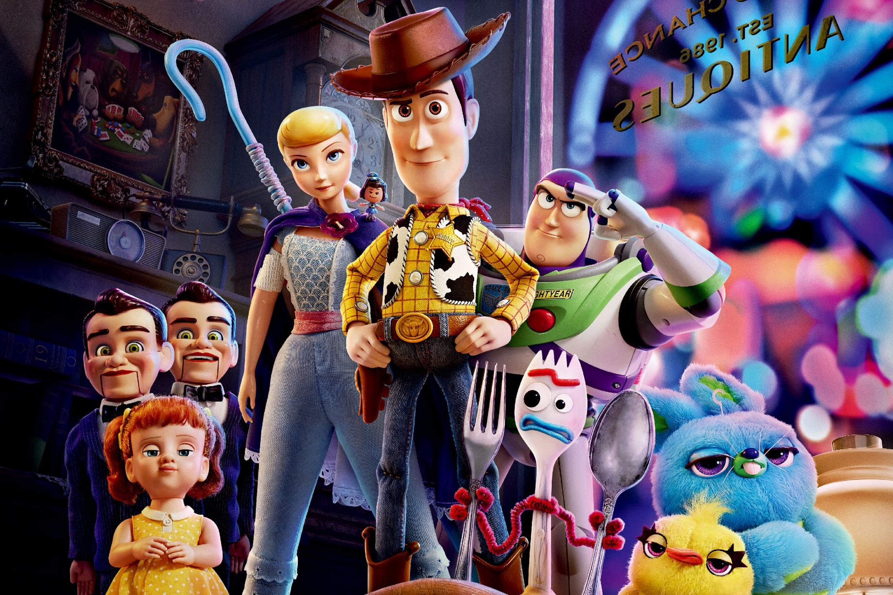

About Woody
Woody is awesome! He is a main character in the Toy Story Franchise movies. He is Andy's favorite toy, since kindergarten. He is a pullstring cowboy rag doll and the leader of all the toys.
Woody and his friends
Woody's Characteristics
- He's got a big heart
- He is a smart and loyal toy
- He would do anything for his friends and family
Woody's Friends
Woody has some great friends. I think his best friend is Buzz Lightyear. Click on the link below to read more about them: